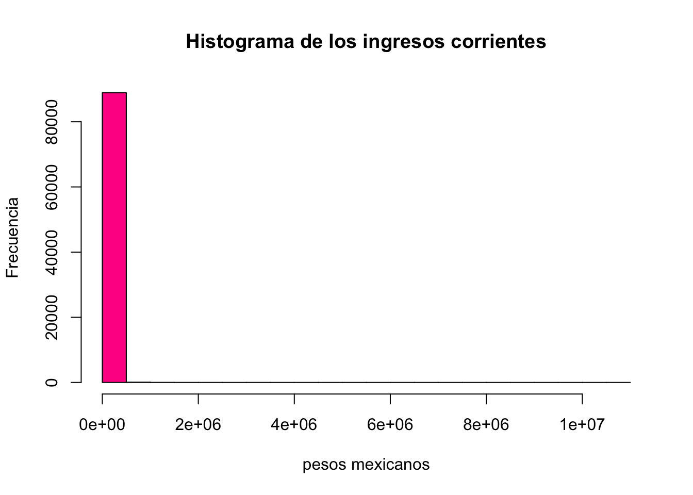

Desde el portal https://datos.gob.mx/ tenemos acceso a directo a varias fuentes de información, al ser datos abiertos, los archivos de texto son muy comunes.
La variable nominal “sexo_jefe”, se captura con “1” para hombres y con un “2” para mujeres en la base de datos. Podemos establecer una operación de igual y además sumar los casos que cumplan con esta condición:
concentrado2020 %>% dplyr::count(sexo_jefe==2) # cuentan los casos que cumplen con la condición "sexo_jefe==2"
# A tibble: 2 × 2
`sexo_jefe == 2` n
<lgl> <int>
1 FALSE 63230
2 TRUE 25776
Esto es a lo que nos referimos con contar frecuencias. Podemos contar casos que cumplan con una operación de igualdad.
concentrado2020 %>%with(table(sexo_jefe) )
sexo_jefe
1 2
63230 25776
3.3.1 Recordemos nuestro etiquetado
etiqueta_sex<-c("Hombre", "Mujer")concentrado2020<-concentrado2020 %>%mutate(sexo_jefe=as_numeric(sexo_jefe)) %>%# para quitar el "string" sjlabelled::set_labels(sexo_jefe, labels=etiqueta_sex)
concentrado2020<-concentrado2020 %>%mutate(clase_hog=as_numeric(clase_hog)) %>%# para quitar el "string" sjlabelled::set_labels(clase_hog, labels=c("unipersonal","nuclear", "ampliado","compuesto","corresidente"))
sexo_jefe n percent
Hombre 63230 0.7104015
Mujer 25776 0.2895985
Para ver que esto es una distribución de frecuencias sería muy útil ver la proporción total, ello se realiza agregando un elemento más en nuestro código con una “tubería”:
class(concentrado2020$ing_cor) # variable de intervalo/razón
[1] "numeric"
En general, tendremos variables de factor que podrían ser consideradas como cualitativas y numéricas. Aunque en realidad, R tiene muchas formas de almacenamiento. Como mostramos con el comando “glimpse()” en la práctica anterior, podemos revisar una variable en específico:
dplyr::glimpse(concentrado2020$sexo_jefe)
num [1:89006] 2 1 1 1 1 1 1 1 1 1 ...
- attr(*, "labels")= Named num [1:2] 1 2
..- attr(*, "names")= chr [1:2] "Hombre" "Mujer"
- attr(*, "label")= chr "Sexo del jefe del hogar"
concentrado2020 %>%mutate(sexo_jefe=as_label(sexo_jefe)) %>%# cambia los valores de la variable a sus etiquetastabyl(sexo_jefe) %>%# para hacer la tablaadorn_totals() %>%# añade totalesadorn_pct_formatting() # nos da porcentaje en lugar de proporción
sexo_jefe n percent
Hombre 63230 71.0%
Mujer 25776 29.0%
Total 89006 100.0%
La tubería o “pipe” %>% nos permite ir agregando elementos de manera sencilla nuestros comandos. En este caso decimos que dentro del objeto haga el cambio, luego la tabla, que le ponga porcentajes y finalmente que nos dé los totales. El total del 100% no aparece, por un elemento propio del programa.
3.4 Variables ordinales
Son variables que dan cuenta de cualidades o condiciones a través de categorías que guardan un orden entre sí.
Para que no nos salgan las categorías sin datos podemos poner una opción dentro del comando “tabyl()”
concentrado2020 %>%mutate(educa_jefe=as_label(educa_jefe)) %>%tabyl(educa_jefe, show_missing_levels=F ) %>%# esta opción elimina los valores con 0adorn_totals()
Las tablas de doble entrada tiene su nombre porque en las columnas entran los valores de una variable categórica, y en las filas de una segunda. Basicamente es como hacer un conteo de todas las combinaciones posibles entre los valores de una variable con la otra.
Por ejemplo, si quisiéramos combinar las dos variables que ya estudiamos lo podemos hacer, con una tabla de doble entrada:
concentrado2020 %>%mutate(clase_hog=as_label(clase_hog)) %>%mutate(sexo_jefe=as_label(sexo_jefe)) %>%# para que las lea como factortabyl(clase_hog, sexo_jefe, show_missing_levels=F ) %>%# incluimos aquí adorn_totals()
De esta manera se colocan todos los datos. Si observa al poner la función “adorn_totals()” lo agregó como una nueva fila de totales, pero también podemos pedirle que agregue una columna de totales.
concentrado2020 %>%mutate(clase_hog=as_label(clase_hog)) %>%mutate(sexo_jefe=as_label(sexo_jefe)) %>%# para que las lea como factortabyl(clase_hog, sexo_jefe, show_missing_levels=F ) %>%# incluimos aquí dos variablesadorn_totals("col")
O bien agregar los dos, introduciendo en el argumento “c(”col”, “row”)” un vector de caracteres de las dos opciones requeridas:
concentrado2020 %>%mutate(clase_hog=as_label(clase_hog)) %>%mutate(sexo_jefe=as_label(sexo_jefe)) %>%# para que las lea como factortabyl(clase_hog, sexo_jefe, show_missing_levels=F ) %>%# incluimos aquí dos variableadorn_totals(c("col", "row"))
Del mismo modo, podemos calcular los porcentajes. Pero los podemos calcular de tres formas. Uno es que lo calculemos para los totales calculados para las filas, para las columnas o para el gran total poblacional.
Para columnas tenemos el siguiente código y los siguientes resultados:
concentrado2020 %>%mutate(clase_hog=as_label(clase_hog)) %>%mutate(sexo_jefe=as_label(sexo_jefe)) %>%# para que las lea como factortabyl(clase_hog, sexo_jefe, show_missing_levels=F ) %>%# incluimos aquí dos variableadorn_totals(c("col", "row")) %>%adorn_percentages("col") %>%# Divide los valores entre el total de la columnaadorn_pct_formatting() # lo vuelve porcentaje
Cuando se hagan cuadros de distribuciones (que todas sus partes suman 100), los porcentajes pueden ser una gran ayuda para la interpretación, sobre todos cuando se comparar poblaciones de categorías de diferente tamaño. Por lo general, queremos que los cuadros nos den información de donde están los totales y su 100%, de esta manera el lector se puede guiar de porcentaje con respecto a qué está leyendo. En este caso, vemos que el 100% es común en la última fila.
Veamos la diferencia de cómo podemos leer la misma celda, pero hoy, hemos calculado los porcentajes a nivel de fila:
concentrado2020 %>%mutate(clase_hog=as_label(clase_hog)) %>%mutate(sexo_jefe=as_label(sexo_jefe)) %>%# para que las lea como factortabyl(clase_hog, sexo_jefe, show_missing_levels=F ) %>%# incluimos aquí dos variableadorn_totals(c("col", "row")) %>%adorn_percentages("row") %>%# Divide los valores entre el total de la filaadorn_pct_formatting() # lo vuelve porcentaje
Finalmente, podemos calcular los porcentajes con referencia a la población total en análisis. Es decir la celda en la esquina inferior derecha de nuestra tabla original.
concentrado2020 %>%mutate(clase_hog=as_label(clase_hog)) %>%mutate(sexo_jefe=as_label(sexo_jefe)) %>%# para que las lea como factortabyl(clase_hog, sexo_jefe, show_missing_levels=F ) %>%# incluimos aquí dos variableadorn_totals(c("col", "row")) %>%adorn_percentages("all") %>%# Divide los valores entre el total de la poblaciónadorn_pct_formatting() # lo vuelve porcentaje
hist(concentrado2020$ing_cor, main="Histograma de los ingresos corrientes", xlab="pesos mexicanos", ylab="Frecuencia",col="deeppink1")

Con pipes:
concentrado2020 %>%with(hist(ing_cor)) # con with, para que entienda
Cuando usamos pipes, se debe de recordar que no es necesario escribir el nombre del data.frame en el filtro porque es lo primero que colocamos en nuestro “pipe”.
Checa que cualquier aditamiento debe ir en el pipe donde está el comando de hist(). Ten cuidado con los paréntesis.
concentrado2020 %>%filter(!is.na(ing_cor)) %>%# la ventaja de esta forma es que podemos hacer más operacioneswith(hist(ing_cor, main="histograma"))